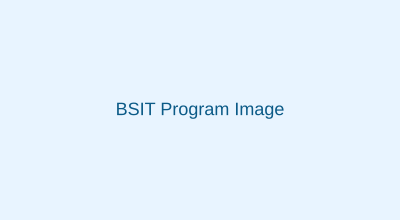

Bachelor of Science in Information Technology (BSIT)

The BSIT program focuses on practical skills in software development, system administration, networking, and multimedia applications. Students gain hands-on experience through lab work and industry projects.
Career Opportunities
- Systems Administrator
- Web / Mobile Developer
- IT Support Specialist
- Multimedia Specialist